IntroductionIn the RTS Prototype article we covered how to get started on building a Real-time Strategy or Hack 'n Slash type camera and movement setup. In this article we're going to build on some of that work to set up an Adventure camera system that allows us to set up cameras on a per-room basis. If you haven't completed the RTS Prototype article you should do so before starting this one. Once you finish there you should be able to simply continue using the same project. Adding the Adventure Camera ModeBefore we get into building our level we're going to add one more camera mode to our arsenal; TrackObject (or Adventure) Mode. This will take our stationary camera and make it track a target object, like the player for instance. In scripts/server/commands.cs add the following code at the end of the file:
function serverCmdactionCam(%client)
{
%client.camera.setTrackObject(%client.player);
}
You can use this mode if you want the camera to track the player as he walks around the room. Next, we'll set up our level for testing. Building A Level With RoomsStart the Torque Toolbox, select your RTS Prototype project and open the Empty Terrain level in the World Editor. 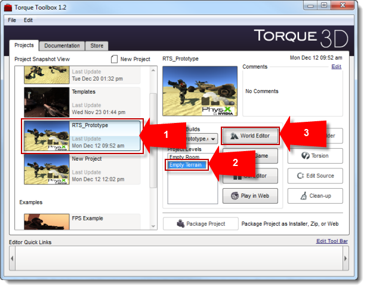 Create a Station by opening the Library tab in the Scene Tree, navigating to art/shapes/station and double-clicking station01. 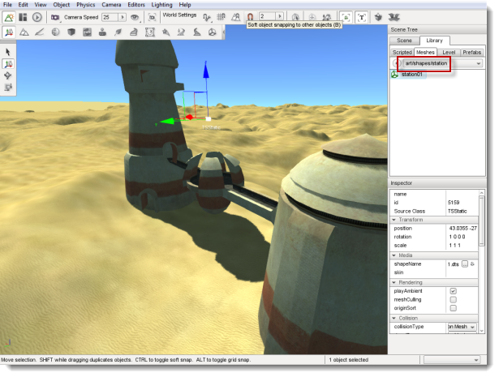 Back in the Scene tab, ensure that your new TSStatic is selected. In the Collision section of the Inspector panel, ensure that collisionType and decalType are both set to Visible Mesh. 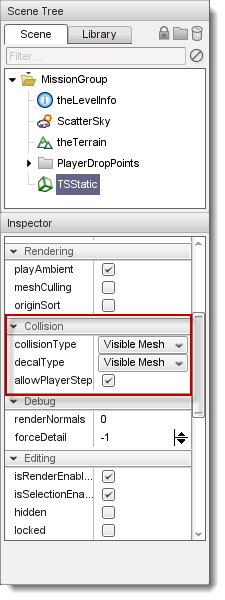 Position the station however you like, smooth the terrain around it and make sure that the player can easily walk into the doors of the station. Next, open the Datablock Editor ( ) and create a new TriggerData called CameraRoomTrigger and copy values from DefaultTrigger. 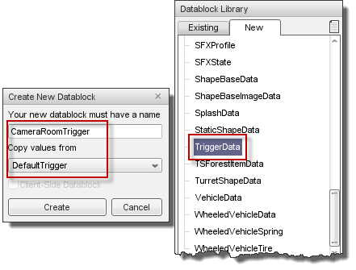 Be sure to save your new datablock ( ). Now you can start creating triggers to define your "rooms" within your scene. We're going to set it up so that when the player enters a trigger the camera is moved to the appropriate position to view the room. We'll start by placing one on the near side of the station.
Name the trigger Room1 and ensure that you select CameraRoomTrigger as its datablock. Size it so that it is fairly flat and move the default spawn sphere up a bit so that the player will fall into the trigger when entering the level. This lets us set the camera to our first room camera angle on level start. 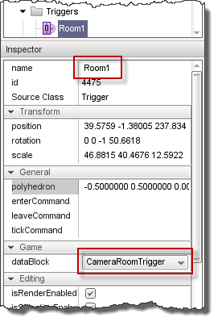 Create another trigger (or copy this one by holding SHIFT while dragging it) and name it Room2. Place it on the other side of the station. 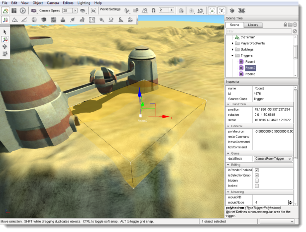 Again, ensure that the new trigger is named Room2 and that its datablock is set to CameraRoomTrigger. Create a third trigger named (you guessed it) Room3 and place it along the "bridge" part of the station.
Room 4 and 5 will be used to cover the short tower section. Room4 will cover the bottom portion: 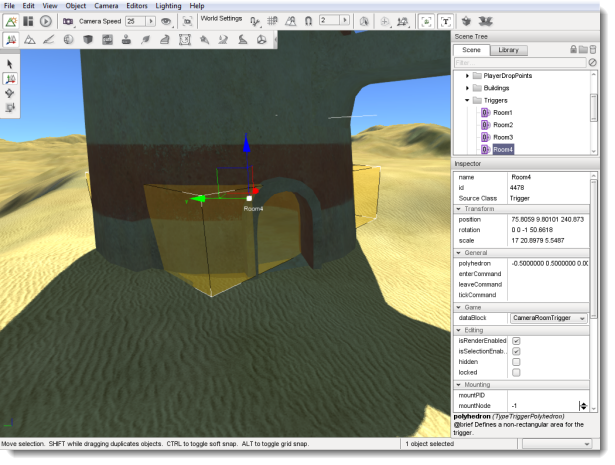 Room5 will cover the top portion of the tower. You may need to adjust the heights and overlap on these two triggers to get your camera angle changes dialed in. 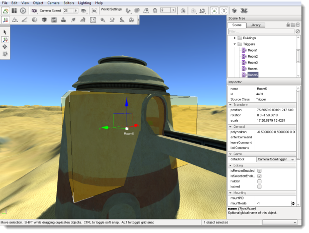 Room6 and Room7 will cover the taller tower. 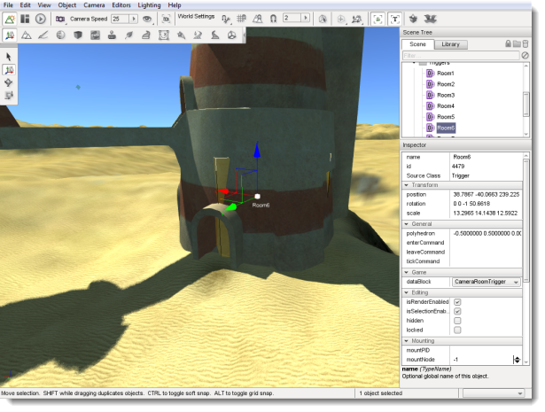 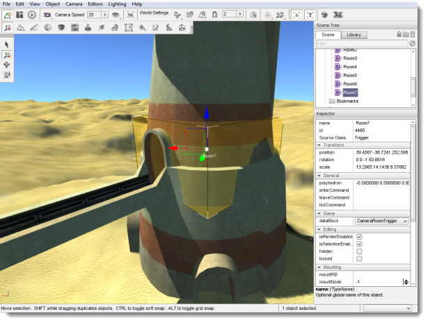 Now that the tower has been partitioned off into "rooms" we'll need some way to mark our camera locations. We can use Spawn Spheres for this, since they don't render in game but they have both position and rotation information attached to them. Move your camera to the position you want your first marker to be and get your angle dialed in. Once your camera is in position, open the Library tab of the Scene Tree, browse to the Level tab's Level folder and double click the Player Spawn Sphere item to create a new Spawn Sphere. 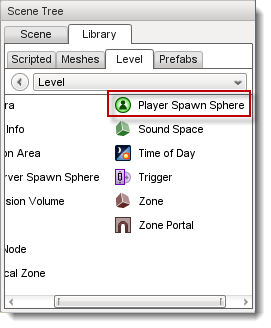 Name your new Spawn Sphere Cam1. 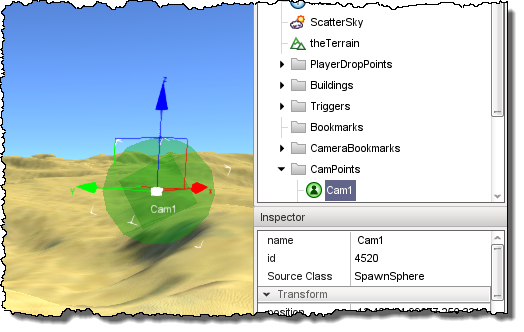 Pull down the Object menu and select Drop Location > at Camera w/Rotation.
Now you can drop your Spawn Sphere so that it will be in the correct place and face the correct direction by selecting Object > Drop Selection with Cam1 selected. You can optionally use the shortcut CTRL-D. 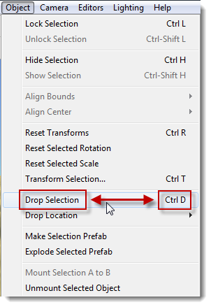 You may see your screen turn green. This is not a bug, you've just pulled the Spawn Sphere over your head and you're seeing the world through emerald-tinted glasses. The Spawn Sphere should be placed and facing exactly the way the camera currently is, so this is a good sign. 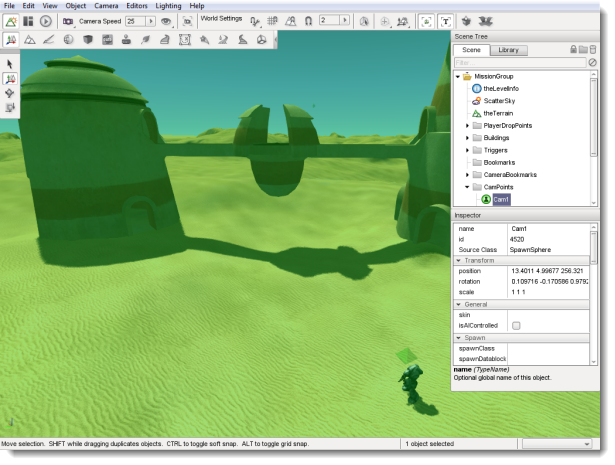 Next, we'll perform the same steps for the rest of our rooms. Move your camera into position, create a new Player Spawn Sphere and then use the Drop Selection command to place it where your camera will be. Name each one Cam# where the # is the same as the number on the corresponding trigger. Hooking Up The TriggersOnce all of the camera markers are placed we need to create a callback function so that our camera will move when we enter our triggers. In scripts/server create a file called cameraTrigger.cs and place the following code in it:
function CameraRoomTrigger::onEnterTrigger(%this,%trigger,%obj)
{
// This method is called whenever an object enters the %trigger
// area, the object is passed as %obj.
// echo(" -- Trigger entered");
%client = %obj.client;
switch$(%trigger.name)
{
case "Room1":
echo(" - entered room 1");
%client.camera.position = Cam1.position;
%client.camera.rotation = Cam1.rotation;
case "Room2":
echo(" - entered room 2");
%client.camera.position = Cam2.position;
%client.camera.rotation = Cam2.rotation;
case "Room3":
echo(" - entered room 3");
%client.camera.position = Cam3.position;
%client.camera.rotation = Cam3.rotation;
case "Room4":
echo(" - entered room 4");
%client.camera.position = Cam4.position;
%client.camera.rotation = Cam4.rotation;
case "Room5":
echo(" - entered room 5");
%client.camera.position = Cam5.position;
%client.camera.rotation = Cam5.rotation;
case "Room6":
echo(" - entered room 6");
%client.camera.position = Cam6.position;
%client.camera.rotation = Cam6.rotation;
case "Room7":
echo(" - entered room 7");
%client.camera.position = Cam7.position;
%client.camera.rotation = Cam7.rotation;
default:
echo(" -- Something is wrong with your room triggers");
}
}
Now open scripts/server/scriptExec.cs and add this code at the end of the file:
// Additional trigger code
exec("./cameraTrigger.cs");
Save all of your scripts and restart your game. When the Empty Terrain level loads your player should fall into Room1 and your camera should set itself right where we want it. Click the right mouse button to move around the area, moving up into the tower and across the bridge to test your camera angles and trigger placement. You may need to move some of your triggers to ensure that the camera angle changes at the right time. If your cursor is hidden when you start the mission, simply open the art/gui/playgui.gui file and at the beginning of the script you should find a section that looks like this:
%guiContent = new GameTSCtrl(PlayGui) {
cameraZRot = "0";
forceFOV = "0";
reflectPriority = "1";
margin = "0 0 0 0";
padding = "0 0 0 0";
anchorTop = "1";
anchorBottom = "0";
anchorLeft = "1";
anchorRight = "0";
position = "0 0";
extent = "1024 768";
minExtent = "8 8";
horizSizing = "right";
vertSizing = "bottom";
profile = "GuiContentProfile";
visible = "1";
active = "1";
tooltipProfile = "GuiToolTipProfile";
hovertime = "1000";
isContainer = "1";
canSave = "1";
canSaveDynamicFields = "1";
enabled = "1";
helpTag = "0";
noCursor = "1";
Simply change the last line to noCursor = "0"; to show the cursor on startup. The 'm' key should toggle the cursor on and off unless you've changed it from the RTS Prototype settings. Also, if you want to use the "Adventure Camera" mode you can change the commandToServer() in the GameCore::preparePlayer() function located in scripts/server/GameCore.cs from:
commandToServer('overheadCam');
to: commandToServer('actionCam');
This will cause the camera to track the player through the scene from each of the vantage points you have set up. ConclusionBy now you should have a fully functional Adventure camera system. There are several ways to improve upon this tutorial; for starters you could set up invisible walls to keep the player from getting lost in the desert. There are dozens of ways to showcase your level and this is just one of them. Hopefully this article will give you some more ideas for camera and movement systems and help you to make the games you want to make. |